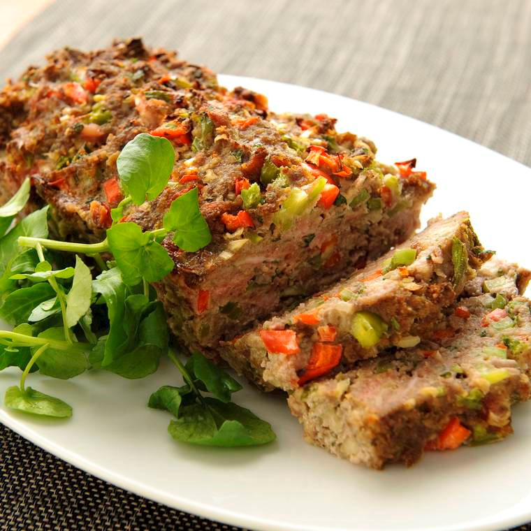

Ingrediënten
- 1 rode paprika
- 1 groene paprika
- 1 ui
- 2 tenen knoflook
- 50 gram bacon
- 1/2 bosje peterselie
- 400g gram mager rundergehakt
- 50 gram paneelmeel
- 1 ei
- 1 blikje tomatenpuree
- 1 theelepel tabasco
- peper
Bereidingswijze
- 1. warm de oven voor op 175 graden Celsius
- 2. maak de paprika's schoon en snijd ze in kleine stukjes. Maak de ui schoon en snijd deze fijn. maak de
knoflook schoon. snijd de bacon in dunne reepjes. hak de peterselie fijn
- doe het gehakt, paprika,ui,bacon,peterselie,paneermeel,ei,tomatenpuree,tabasco en paper in een
kom.Pers de tene knoflook erboven uit en kneed goed totdat alle Ingrediënten zijn gemengd
- druk het mengselin een cakevorm en bak deze ongeveer 1 uur in de oven
- haal de vorm uit de oven. laat even afkoelen en haal het daarna uit de vorm.serveer het gehaktbrood
op een schotel

tip lekker met meergranenstokbrood. Voor een minder zout gehaktbrood ku je de bacon weglaten